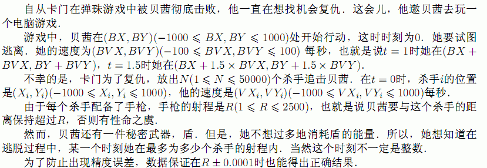
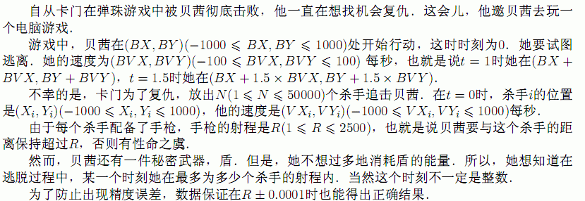

| F.A.Qs | Home | Discuss | ProblemSet | Status | Ranklist | Contest | 入门OJ | ModifyUser Xeonacid | Logout | 捐赠本站 |
|---|
| F.A.Qs | Home | Discuss | ProblemSet | Status | Ranklist | Contest | 入门OJ | ModifyUser Xeonacid | Logout | 捐赠本站 |
|---|

第1行输入N，R，BX，BY, BVX，BVY，之后N行每行输入四个整数Xi，Yi，VXi，VYi．
一个整数，表示在逃脱过程中，某一个时刻最多有这个数理的杀手可以射杀贝茜．